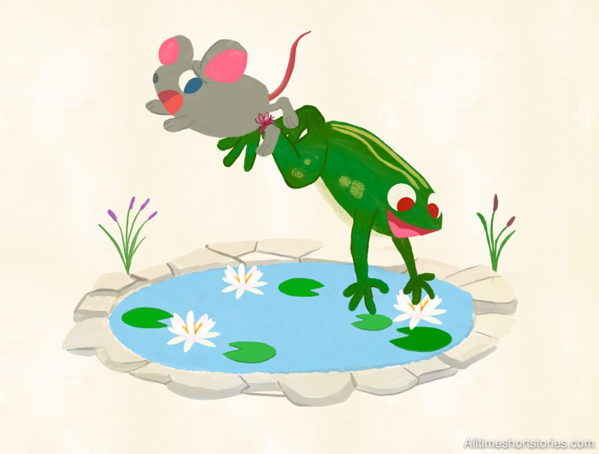

The Frog and the Mouse

A young Mouse was running along the bank of a pond, exploring and admiring the beautiful nature. A Frog also lived along
the same bank. When the Frog saw the young Mouse loitering around his area, he swam near the Mouse and croaked:
“Do you want to pay me a visit to the wonderful world inside the pond? I can promise you a good time full of adventure
if you do.”
The Mouse did not have anything to do and was eager to see and explore the world around. So, he did not need much
coaxing and quickly agreed to join the adventure under the pond. Although the Mouse could swim a little, he did not want
to risk going into the pond all on his own without any help.
The Frog offered a plan to tie the Mouse’s leg to his own with a reed, so he could quickly rescue the Mouse when
necessary. The Mouse agreed to the Frog’s plan, and they jumped into the pond.
The Frog jumped into the pond and dragged the Mouse along with him. The Mouse soon realized being pulled inside the pond
was no fun. Finally, he had enough of it and requested to return to shore, but the treacherous Frog did not bother.
Instead, he pulled the Mouse deeper into the pond and drowned him.
A Hawk was flying over the pond when he saw the Mouse struggling and drawing in the water. So, the Hawk came sailing
over the pond and swooped the Mouse. Along with The Mouse was the Frog dangling from his leg. So, the Hawk got lucky to
have both the Mouse and the Frog for his dinner.
While the Mouse had to meet the unfortunate end due to his foolishness, the Frog ended up being the Hawk’s dinner merely
due to his treacherous intentions.
Moral: Those who seek to harm others often come to harm themselves through their own deceitful actions.